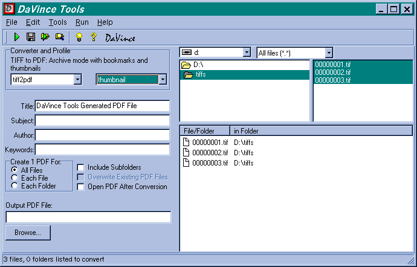
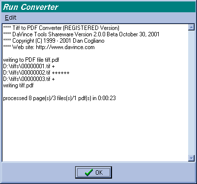
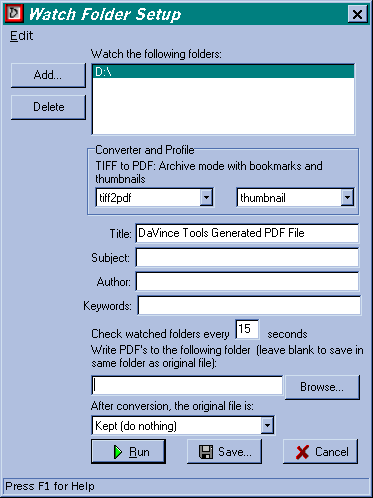

Part of DaVince Tools
Web Site: www.davince.com
Last Modified: July 22, 2003
wdavince [file1] [file2] … [filen]
or
wdavince file.dcf
Arguments:
file1, file2, filen: Specify the name(s) of a file to be converted
file.dcf : A DCF file to execute when first starting up the program
(must have a ".dcf" extension)
Below is a screen shot of wdavince:

| Converter and Profile | Select appropriate converter and profile. This is automatically filled in with the first file added to the conversion list ("default" profile is assumed). A description of the profile is displayed if a "description" option is included in the profile. |
| Title, Subject, Author, Keywords | The title, subject, author and keywords fields that will be filled in the newly created PDF file. |
| Create 1 PDF for: All Files, Each File, Each Folder | Either combine multiple files into one PDF, create one PDF for each file, or create one PDF for each folder, respectively. |
| Include Subfolders | Include all subfolders when converting folders. |
| Overwrite Existing PDF Files | Used when "Each File" is set, disabling this option will skip converting a file if the resulting PDF file already exists AND the PDF file date is newer than the original file date. |
| Open PDF After Conversion | Used when "All Files" is set, enabling this option will automatically launch the PDF viewer with the just converted PDF file. |
| Output PDF File/Output Directory | When "All Files" is set, "Output PDF File" specifies
the PDF filename to create. If blank, the name of the PDF file will be
the converter's default name. For example, "tiff.pdf" is the default name
when converting TIFF files.
When "Each File" or "Each Folder" is set, "Output Directory" specifies the folder where the newly created PDF files will be stored. If left blank, the PDF files will be stored in the same directory as the data file or folder. |
| File Menu: | |
|
|
Save current settings to a DaVince command file. This command file can be executed later by using the "Run Command File…" menu option. |
|
|
Exit the Program |
| Edit Menu: | |
|
|
Reset fields to their default value |
|
|
Refreshes directory and file lists |
|
|
Cut, copy or paste field data to or from the clipboard |
| Run Menu: | |
|
|
Convert the specified files |
|
|
Execute a DaVince command file.These files can be created manually or automatically using the "Save to DCF…" menu option. |
|
|
Display watch folder window. |
| Tools Menu | This menu is customizable, which is used to launch other applications. It also may be completely removed if desired. The default installation includes menu items for opening PDF files, modifying profile settings, tiffdump, pdfmaze and access to sample DaVince Tools Plus programs. |
| Help Menu | |
|
|
On-line help in HTML format |
|
|
Product web site |
|
|
Display tip of the day window |
|
|
Link to registration information |
|
|
Prompt for the license key received when registering the product and install it. |
|
|
A dialog box displaying the version number and the registration status. |
The output of a sample conversion appears below:


This feature allows one to have a folder watched for incoming files. As files appear in one or more defined folders, they are converted to PDF using the specified converter and profile. For a frequently watched folder, the settings can be saved to a DCF file using the "Save…" button. This allows the folder to be watched later by using the "Run Command File…" menu option and specifying this DCF file. After conversion, the original file can be moved from the watch folder to the PDF folder, it can be deleted, or it can be left alone.
Under the "Edit" menu, the single option "Reset Fields" resets all fields (except the watch folders field) to the original settings.
010=title:"TIFF Dump",exe:"tiffdump.exe %i",inputext:tif,input:"TIFF file(*.tif,*.tiff)|*.tif;*.tiff",params:"console,open"
The first parameter in the line ("010") specifies the ordering sequence of the item in the Tools menu. The actual value is not important, but its ordering sequence is important. The ordering sequence is based on the alphanumeric sorting sequence of the items and does not need to be sequential. Alphanumeric sorting requires leading zeros in numbers. This means a sequence value of "15" would appear before a value of "3", but not "03".
The sequence value is followed by an equals sign ("="). This is then
followed by a series of comma delimited parameters used for defining the
menu item. The following parameters are allowed for defining the tool menu
item:
| title | The title to use in the menu. Create the shortcut character by inserting an ampersand character (&) before the shortcut character. To create a separator bar in the menu, use a single dash as its title ("-") |
| exe | The filename of a data file or executable file with any associated parameters. It should be located either in the "DaVince Tools" exe directory, or it should be in the path, otherwise, the full pathname must be specified. Single quotes should surround the data file or executable file name if the path contains spaces. If an executable file name is used and an input file parameter is expected, use "%i" in the command line. If the command expects an output file to be specified, use "%o" in the command line. The "%i" and "%o" options will fill in the input and output filenames on the command line by displaying the appropriate file dialog box to the user. |
| priority | Priority value for the converter. Priority is used to when guessing the converter to use when none has been specified and a file has just been dropped into the conversion window. If two or more converters share a common file type, the converter with the higher priority will be chosen over one with a lower priority. For example, both tiff2pdf and file2pdf convert tiff files. If tiff2pdf has a higher priority specified, then it will be chosen over file2pdf. |
| input | The filter definition to be used in the open dialog box. |
| inputext | The default file extension to be used with the input file. |
| output | The filter definition to be used in the save dialog box. |
| outputext | The default file extension when creating the output file, which is used by the save dialog box. |
| params | Additional comma delimited parameters that can
be used to define the behavior of the tool. This item must be enclosed
in quotes since it uses the same delimiter. These parameters are:
console - Run the tool in the "DaVince Tools" console window. open - open the output file with its default viewer. For example, a PDF file will be opened by Acrobat Reader or Exchange. When using the open parameter with "exe" parameter, you must include the "%o" option in order for this to work. To open an existing file (i.e. a previously created PDF file), include the inputext and input parameters (the exe parameter is not needed). Snother way to open an existing file is to include the inputext, input and exe parameter of "%i" (the params parameter is not needed in this case). |
DaVince Tools was written in C++ using the DaVince Class Library, written by the same author as this program. The DaVince Class Library is a C++ library for developing PDF and TIFF applications. Contact the author at info@davince.com for more information on the availability of the class library.